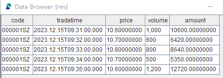
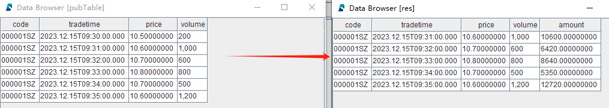
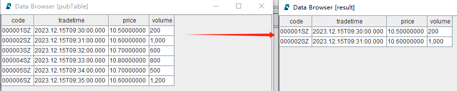

发布与订阅
发布-订阅模型
DolphinDB 采用经典的发布-订阅（Pub-Sub）通信模型，通过消息队列实现流数据的发布与订阅，从而将流数据生产者（发布者）与消费者（订阅者）解耦。这种模式促进了系统内不同组件之间的通信，提高了可伸缩性，改善了发送者的响应能力。
发布数据
发布端在每个节点上维护一个发布队列。当新的流数据注入到该节点的流数据表时，发布端会将这些数据发送到相应的消息发布队列。随后，发布线程将数据发布到各个订阅端的消费队列。
订阅数据
每个订阅线程对应一个消费队列。订阅成功后，每当有新数据写入流数据发布表时，发布端会主动通知所有订阅方，订阅端的消费线程从消费队列中获取数据进行增量处理。
订阅消费
DolphinDB 的数据节点和计算节点可以作为消费者，通过 subscribeTable 函数订阅流数据表。以下代码展示了一个简单的流数据实时清洗、转换并写入数据库的示例：
step1：创建存储数据库和分区表
drop database if exists "dfs://minuteBar" create database "dfs://minuteBar" partitioned by VALUE(2020.01.01..2021.01.01) engine='OLAP' create table "dfs://minuteBar"."minuteBar"( securityid SYMBOL tradetime TIMESTAMP price DOUBLE volume INT amount DOUBLE ) partitioned by tradetime
step2：创建发布流数据表，用于发布数据
colNames = ["code", "tradetime", "price", "volume"] colTypes = [SYMBOL, TIMESTAMP, DOUBLE, INT] share(table=streamTable(1:0, colNames, colTypes), sharedName="pubTable")
step3：定义数据清洗和转换的回调函数，用于清洗和转换数据
def dataETL(msg){
result = select *, price*volume as amount from msg where price>=10.6
loadTable("dfs://minuteBar", "minuteBar").append!(result)
}step4：订阅第一步定义的流数据表
subscribeTable(tableName="pubTable", actionName="dataETL", offset=-1, handler=dataETL, msgAsTable=true, batchSize=2000, throttle=0.01)
-
offset=-1 表示从流数据表的当前最新行开始消费
-
handler=dataETL 表示处理订阅的回调函数为自定义函数 dataETL
-
msgAsTable=true 表示回调函数处理的 msg 对象数据格式为表
-
batchSize=2000，throttle=0.01 表示上游流表一旦有数据更新，满足以下任一条件触发回调函数执行：（1）待处理数据行数大于等于 2000 条；（2） 时间间隔大于等于 0.01 秒。设置该参数的目的是为了批量处理数据以提高数据处理吞吐量
返回如下信息说明订阅成功：
localhost:8200:local8200/pubTable/dataETLstep5：模拟单条数据写入
tableInsert(pubTable, "000001SZ", 2023.12.15T09:30:00.000, 10.5, 200) tableInsert(pubTable, "000001SZ", 2023.12.15T09:31:00.000, 10.6, 1000) tableInsert(pubTable, "000001SZ", 2023.12.15T09:32:00.000, 10.7, 600) tableInsert(pubTable, "000001SZ", 2023.12.15T09:33:00.000, 10.8, 800) tableInsert(pubTable, "000001SZ", 2023.12.15T09:34:00.000, 10.7, 500) tableInsert(pubTable, "000001SZ", 2023.12.15T09:35:00.000, 10.6, 1200)
step6：查询分区表内数据
res = select * from loadTable("dfs://minuteBar", "minuteBar") where date(tradetime)=2023.12.15
返回结果 res：

从返回结果可以看到，price 小于 10.6 的记录被清洗掉，且增加了 amount 列（price*volume）：
step7：取消订阅
unsubscribeTable(tableName="pubTable", actionName="dataETL")
step8：删除发布流数据表
注意：删除流数据表前，必须先把其所有订阅取消掉。
dropStreamTable(tableName="pubTable")step9：删除数据库
drop database if exists "dfs://minuteBar"自动重新订阅
DolphinDB 的流数据订阅支持自动重连。当 subscribe 函数的 reconnect 参数设为 true
时，消费者会记录流数据的 offset。在连接中断时，订阅端会自动从该 offset 开始重新订阅。上述例子中的订阅可以这样设置自动重连功能：
subscribeTable(tableName="pubTable", actionName="dataETL", offset=-1, handler=dataETL, msgAsTable=true, batchSize=2000, throttle=0.01, reconnect=true)
过滤发布
发布端可以设置流数据表的过滤列。消费者在执行 subscribe
函数时，可以基于过滤列指定过滤条件。通过指定过滤列，可以在发布端进行数据过滤，减少网络流量。设置过滤发布的步骤如下：
-
在发布端执行 setStreamTableFilterColumn 函数，指定流数据表的过滤列
-
指定
subscribe函数的 filter 参数。流数据表过滤列只有在 filter 中的数据才会被发布到订阅端，不在 filter 中的数据不会被发布。目前，仅支持对一个列的数据进行过滤
例如，发布端上的流数据表 st 只向该消费者发布 code 为 000001SZ 和 000002SZ 的数据：
step1：创建发布流数据表并设置过滤列
colNames = ["code", "tradetime", "price", "volume"] colTypes = [SYMBOL, TIMESTAMP, DOUBLE, INT] share(table=streamTable(1:0, colNames, colTypes), sharedName="pubTable") go setStreamTableFilterColumn(streamTable=pubTable, columnName="code")
step2：创建存储过滤后数据的共享普通内存表
colNames = ["code", "tradetime", "price", "volume"] colTypes = [SYMBOL, TIMESTAMP, DOUBLE, INT] share(table=streamTable(1:0, colNames, colTypes), sharedName=`result)
step3：订阅发布流数据表并设置过滤条件
filter=symbol(`000001SZ`000002SZ) subscribeTable(tableName="pubTable", actionName="dataFilter", offset=-1, handler=result, msgAsTable=true, batchSize=2000, throttle=0.01, reconnect=true, filter=filter)
step4：模拟单条数据写入
tableInsert(pubTable, "000001SZ", 2023.12.15T09:30:00.000, 10.5, 200) tableInsert(pubTable, "000002SZ", 2023.12.15T09:31:00.000, 10.6, 1000) tableInsert(pubTable, "000003SZ", 2023.12.15T09:32:00.000, 10.7, 600) tableInsert(pubTable, "000004SZ", 2023.12.15T09:33:00.000, 10.8, 800) tableInsert(pubTable, "000005SZ", 2023.12.15T09:34:00.000, 10.7, 500) tableInsert(pubTable, "000006SZ", 2023.12.15T09:35:00.000, 10.6, 1200)
查看发布端的流数据表 pubTable 和订阅端的过滤后的数据表 result：
step5：取消订阅
unsubscribeTable(tableName="pubTable", actionName="dataFilter")
step6：删除发布流数据表
注意：删除流数据表前，必须先把其所有订阅取消掉。
dropStreamTable(tableName="pubTable")step7：删除共享的普通内存表
undef(obj="result", objType=SHARED)